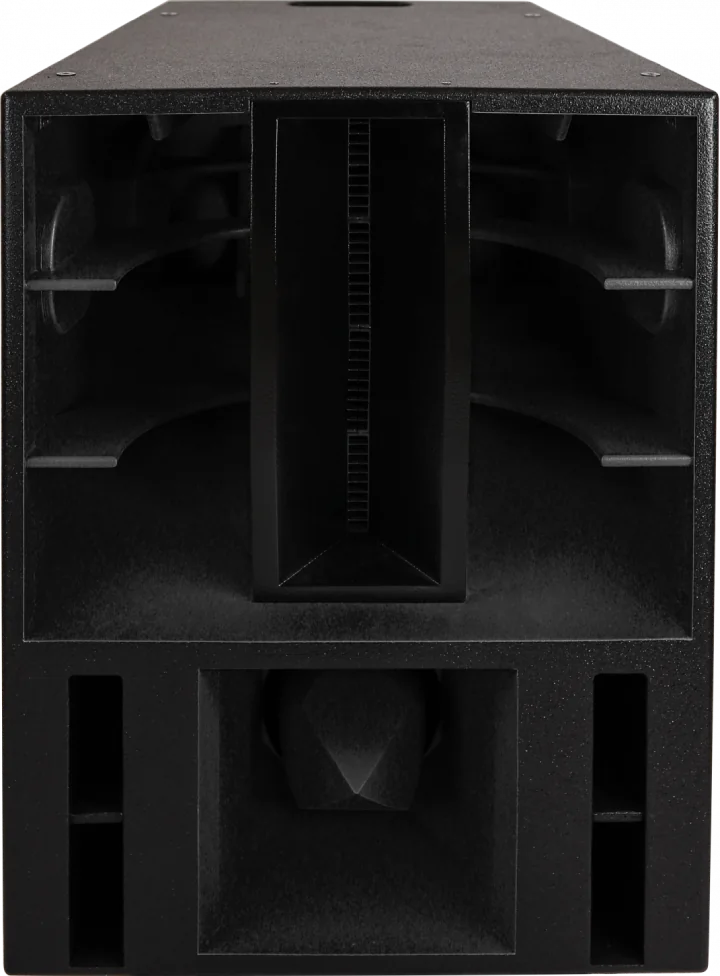

Precision
The Haymaker
155 lbs
- Dimensions (D×W×H)
- 27 × 27 × 32 in
- Frequency response (-3dB)
- 60 Hz – 20 kHz
- Sensitivity (1W/1m)
- High 105 dB
Mid 100 dB
Low 97 dB - Power (nominal / continuous)
- High 400 / 800 W
Mid 400 / 800 W
Low 1200 / 2400 W - Quantity
- 4
The Haymaker is one of HSD's latest speaker designs, expertly engineered to deliver full range audio to the listener. Featuring four powerful 1-inch compression drivers, a 10-inch mid-range speaker, and an 18-inch subwoofer, a pair of Haymakers can be configured to either project high and mid-range frequencies for large crowds or function as full-range speakers for more intimate settings.